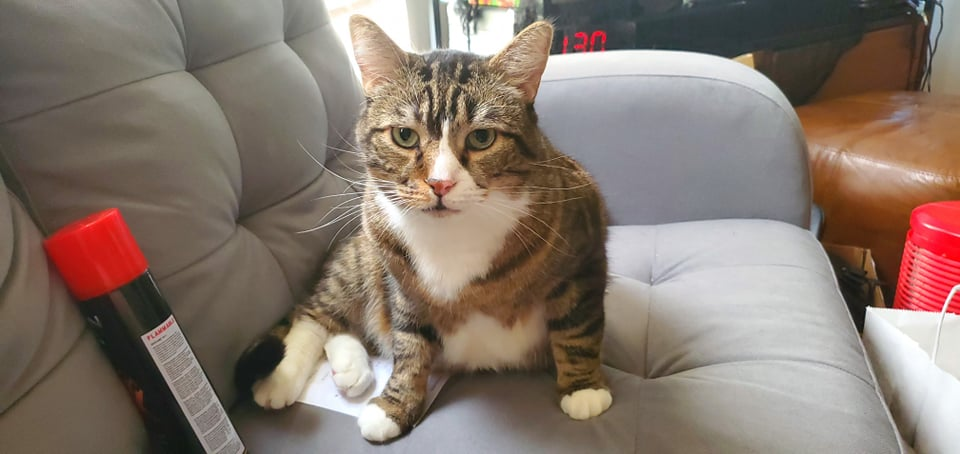
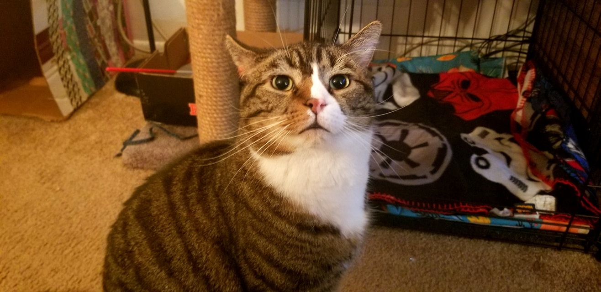
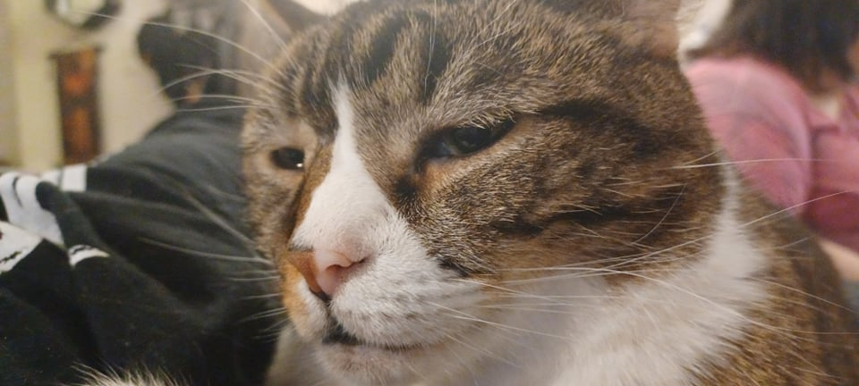
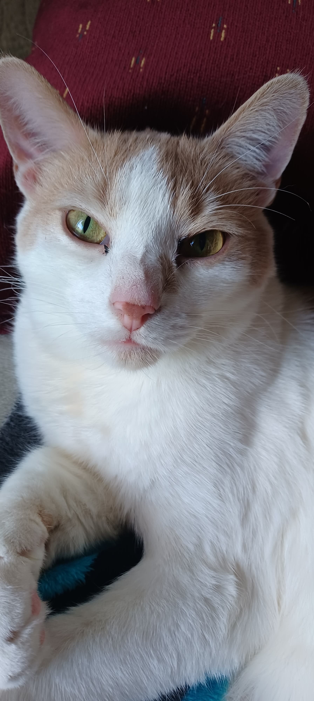
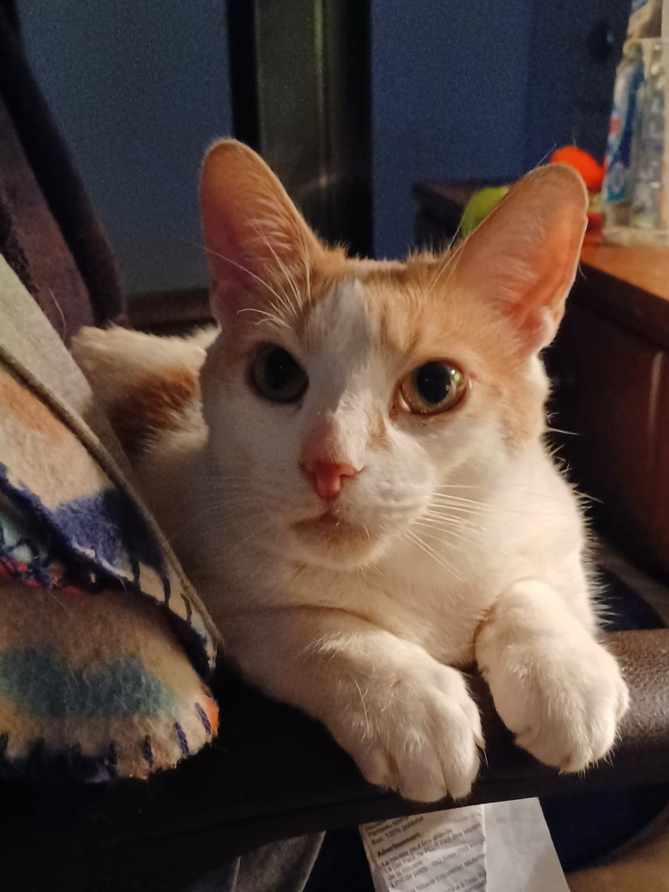
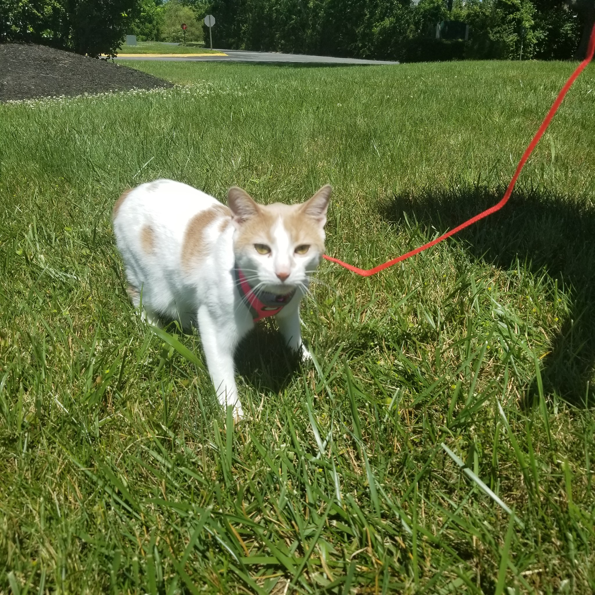
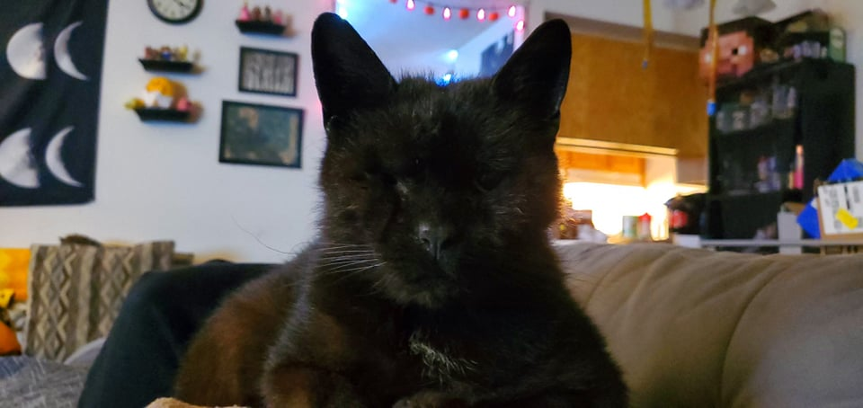
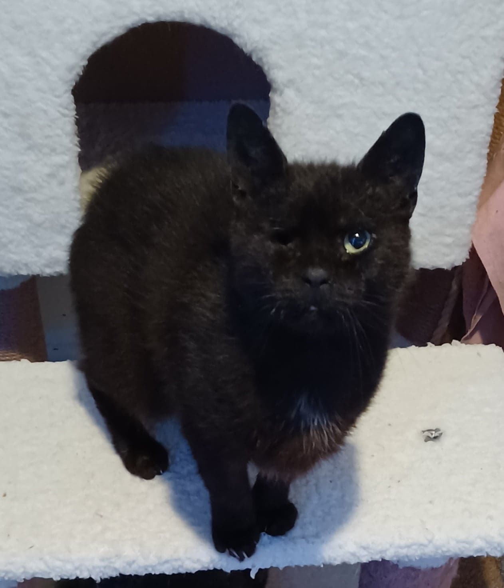
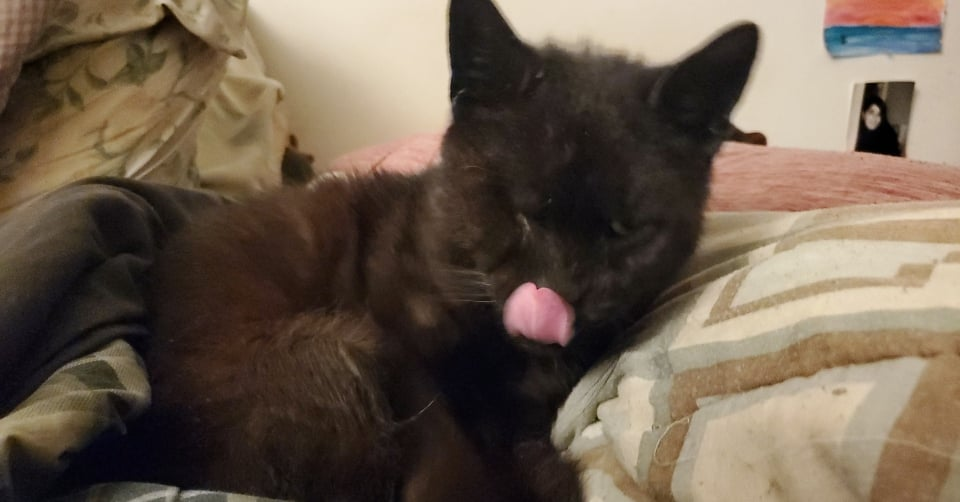

Lil Guys
~~~The Star Kitties~~~



Mittens!
-
A kind, gentle soul, Mittens is the oldest of the 3 cats.
-
He likes to lay on the couch, look out the side door window, and, of course, get pet!
-
He has a two-colored nose and the softest belly you've ever seen.



James!
-
Rambunctious and a cuddlebug, James is the youngest of the 3 cats.
-
He has the most energy of the 3 and is always trying to play with something or scratch something.
-
When he is very sleepy, he gets these adorable little bags under his eyes.



Corn!
-
Corn has a playful and lovable attitude, and is the "middle child" of the 3 cats.
-
He likes to play and scratch like James, but when he's hungry he SCREAMS like he hasn't eaten in weeks!
-
If you haven't noticed already, he only has 1 eye! He had to have surgery because of an infection but he's so much better now.
Fun tip: click on your favorite picture and it'll get a special star!